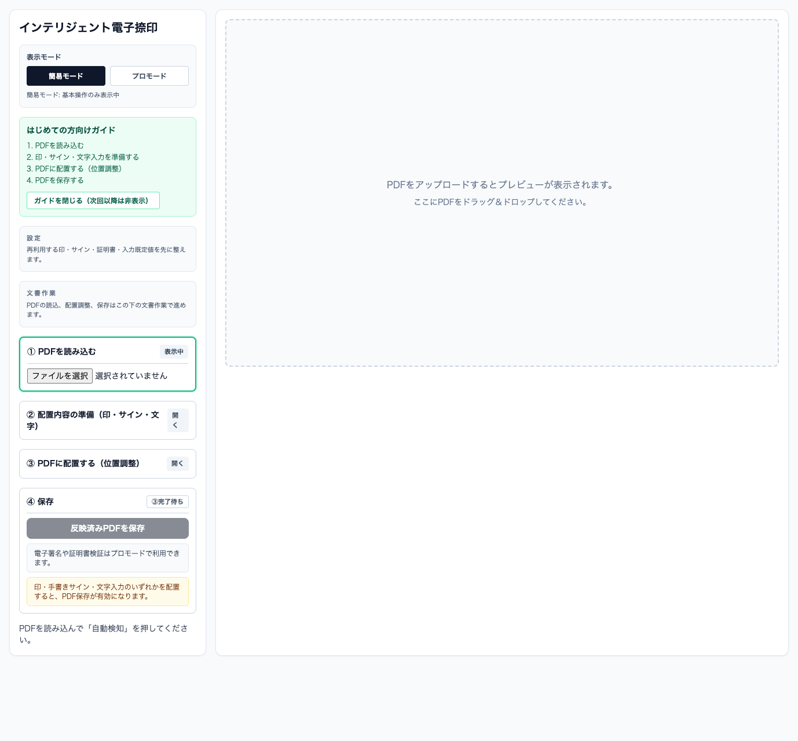
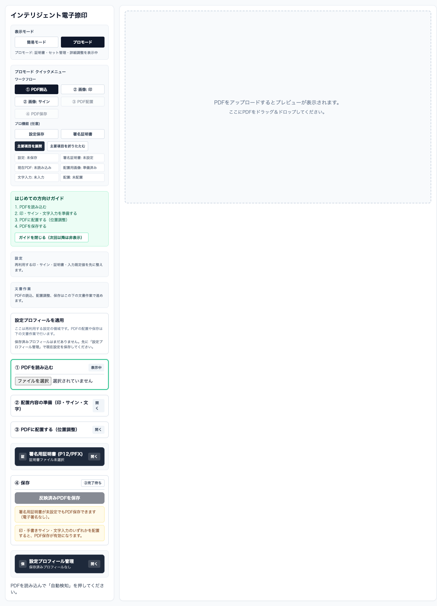

Featured App
PDFへの捺印作業を、AutoHanko でひとつの画面にまとめる。
AutoHanko は、PDF読込、印・手書きサイン・文字入力の準備、位置調整、保存までをブラウザ上で進められる実アプリです。テンプレート説明ではなく、公開中の画面と導線をそのまま見せるサイトに更新しました。
Live Screen
最初に見るのは、作業の流れが整理された左カラムです。

初回ガイド、表示モード切替、PDF読込から保存までの手順が一画面にまとまっているので、初見でも次に何をすればよいかが分かりやすくなっています。
Workflow
画面からそのまま伝わる利用フロー
1. PDFを読み込む
左カラムの最初のステップからPDFをアップロードし、右側のプレビュー領域で確認しながら作業を始めます。
2. 配置内容を準備する
印、手書きサイン、文字入力をひとつの流れで準備できるので、別々のツールへ移動せずに済みます。
3. 位置を調整して配置する
PDFプレビューを見ながら配置位置を調整し、必要な要素を実際の文書へ反映します。
4. 反映済みPDFを保存する
配置が完了すると保存操作へ進めるため、作業の終点が明確で、毎回の捺印手順を短くまとめられます。
Modes
簡易モードで始めて、必要ならプロモードへ広げられる。
まずは簡易モードでPDF作業の基本だけを見せ、より細かい運用ではプロモードに切り替える設計です。画面を見た限りでも、証明書や設定プロフィール管理の導線が追加され、単発利用と継続利用の両方を意識した構成になっています。
Pro Mode
詳細運用向けのUIも公開中です。

プロモードでは、設定保存、署名証明書、状態確認が追加されます。必要なユーザーだけに情報を広げる形なので、複雑さを抑えながら機能を増やせます。
Published App
現在このサイトで紹介している実アプリ
いま公開しているアプリは 1 件です。実際に動く AutoHanko を起点に、画面、要点、詳細ページ、公開リンクまでまとめて確認できます。

Try It
AutoHanko をそのまま開いて試せます。
まずは公開中のアプリを確認し、使いどころや改善相談があればお問い合わせください。サイト上の説明だけでなく、実画面へ直接移動できます。